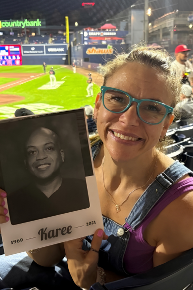

Tavyn Bryn Thuringer
Peer support specialist · TSWR facilitator · SADOD since 2020

I am a dedicated peer support specialist, walking alongside individuals navigating grief, recovery, and the complexities that come with both. My passion for this work is deeply personal. I have experienced the loss of people I love to substance use disorder, and my own journey through addiction has shaped the way I show up for others—with empathy, honesty, and understanding. Today, I am grateful to be in recovery for four years.
I currently serve as a facilitator with the Sun Will Rise Foundation and have been part of SADOD since 2020, where I’ve gained invaluable experience supporting individuals from all walks of life. In addition to this work, I facilitate groups centered on mental health, codependency, and domestic violence, creating spaces where people feel seen, heard, and supported.
I believe that healing happens in connection. Peer support offers a sense of belonging that many of us have searched for, and it is an honor to be part of that process. Every person I walk with reminds me that recovery is possible, and that none of us have to do it alone.